Our Mission
Our work is to produce new insights into device-edge-cloud data-driven communicating frameworks and future transportation services, build digital replicas of real-world entities based on AI, big data, cloud/edge computing, and mixed reality. Our goal aims to create an environment with freedom and inclusion to explore newly generating thoughts and make outstanding contributions to our field or even the whole industry.
Pillars to Our Research
- Automated Driving Algorithms and Systems
- Human-Autonomy Teaming
- Personalized Recommendation
- Cloud/Edge Computing
- Advanced Simulation
Openings
Our lab is currently seeking candidates for various positions including PhD, MS, and BS students, as well as remote-friendly interns. If you are interested, please send your resume or CV to ziran@purdue.edu with the email title "[Position] Application-[Full Name]". Professor Wang can fund and supervise prospective students in Civil Engineering, Electrical and Computer Engineering, and Mechanical Engineering at Purdue University.
News
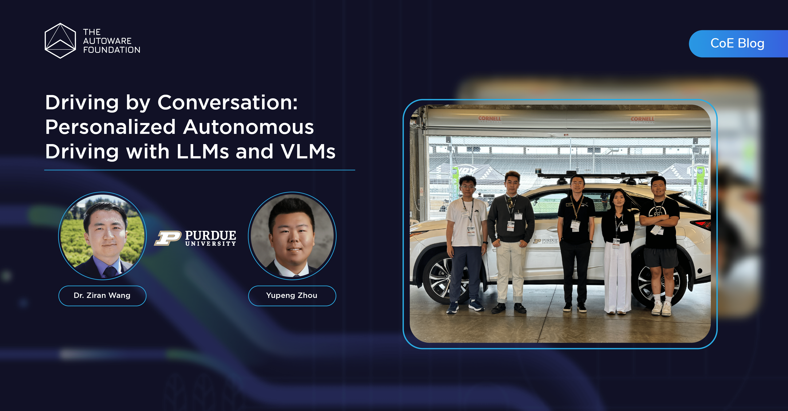
Aug. 14, 2025
The Autoware Foundation published a blog about our work "Driving by Conversation: Personalized Autonomous Driving with LLMs and VLMs."
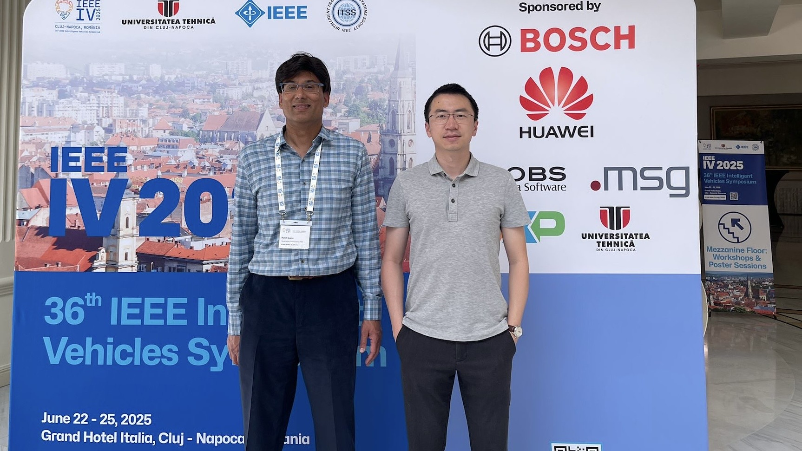
Jun. 22, 2025
We presented "Video Token Sparsification for Efficient Multimodal LLMs in Driving Visual Question Answering" at the 2025 IEEE Intelligent Vehicles Symposium (IV), Cluj Napoca, Romania.

May. 15, 2025
Prof. Wang represented Purdue University to sign a letter of intent with Korea Auto-Vehicle Safety Association (KASA), Seoul, South Korea.

May. 1, 2025
Prof. Wang obtained a courtesy appointment as Assistant Professor in the Elmore Family School of Electrical and Computer Engineering at Purdue University.

Apr. 24, 2025
We presented "STAMP: Scalable Task- And Model-agnostic Collaborative Perception" at the 2025 International Conference on Learning Representations (ICLR), Singapore.

Mar. 14, 2025
Prof. Wang represented the IEEE Intelligent Transportation Systems (ITS) Society to attend the 2025 IEEE Annual SAC/YP/WiE/LM F2F Committee Meeting, Panama City, Panama.

Feb. 18, 2025
Prof. Wang was invited to visit University of California, Berkeley and delivered a talk "LLM4AD: Large language models for autonomous driving," Berkeley, CA.

Jan. 7, 2025
Prof. Wang was invited to visit University of Illinois Urbana-Champaign and delivered a talk "LLM4AD: Large language models for autonomous driving," Champaign, IL.
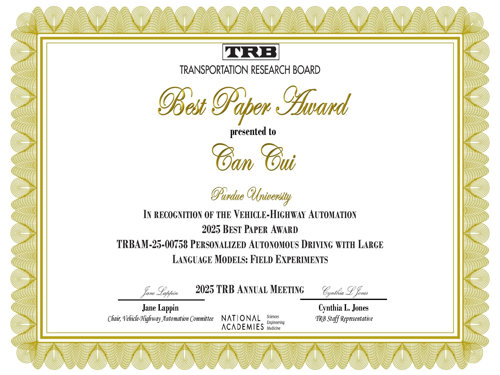
Jan. 7, 2025
Our paper "Personalized Autonomous Driving with Large Language Models: Field Experiments" received the 2025 Best Paper Award from the TRB Vehicle-Highway Automation Committee, Washington, D.C.

Nov. 28, 2024
Prof. Wang started to serve as Associate Editor for IEEE Transactions on Intelligent Transportation Systems and Column Editor for IEEE Intelligent Transportation Systems Magazine.

Nov. 12, 2024
We presented our paper "Learning Autonomous Driving Tasks via Human Feedbacks with Large Language Models" at the 2024 Conference on Empirical Methods in Natural Language Processing (EMNLP), Miami, Florida.

Sep. 24, 2024
We presented our two papers and hosted the 2nd Workshop on Large Language and Vision Models for Autonomous Driving (LLVM-AD), at the 27th IEEE International Conference on Intelligent Transportation Systems, Edmonton, Canada.
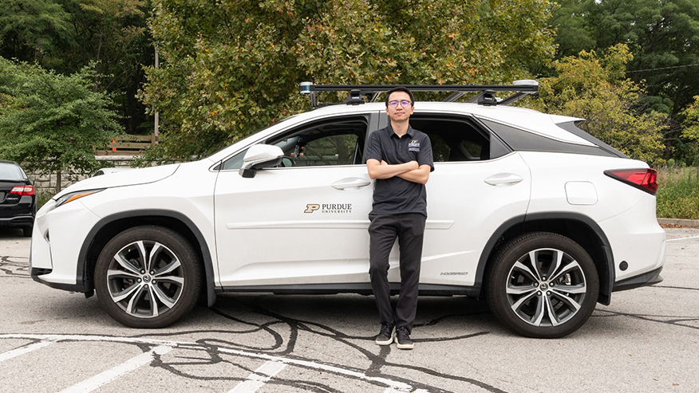
Sep. 16, 2024
Our work on large language models for autonomous driving was featured by Purdue News and multiple media outlets, such as ABC, CBS, FOX, TechBrew, and TechXplore.

Sep. 6, 2024
Our lab was invited by Autoware Foundation to feature our autonomous vehicle at the Indy Autonomous Challenge, Indianapolis, Indiana.
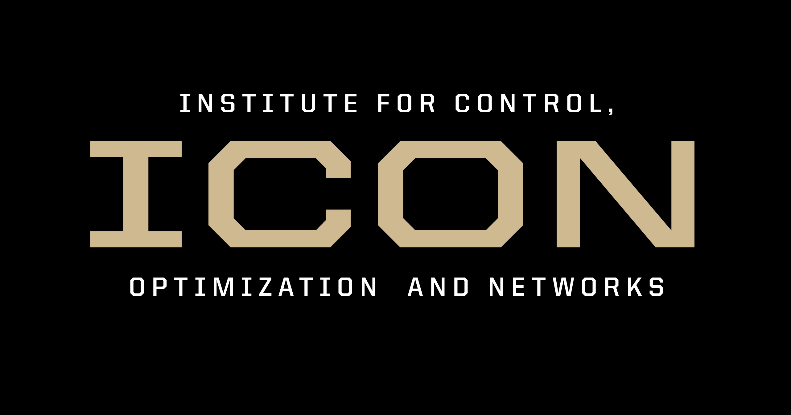
Aug. 1, 2024
Prof. Wang was nominated the Assistant Director of the Institute for Control, Optimization and Networks (ICON), Purdue University, West Lafayette, IN.

Jun. 2, 2024
Our paper, "ViT-DD: Multi-Task Vision Transformer for Semi-Supervised Driver Distraction Detection," received the Best Paper Award from the IEEE TIV & IV Joint Workshop.

Apr. 10, 2024
We demonstrated our lab's large language model–based autonomous driving research to Jeff Dean, Chief Scientist of Alphabet.
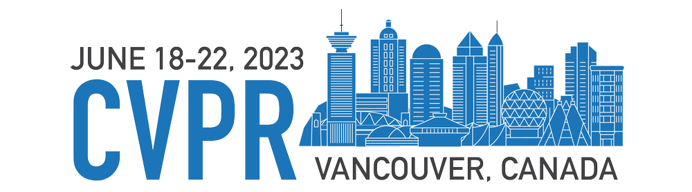
Feb. 26, 2024
Our three papers "Quantifying Uncertainty in Motion Prediction with Variational Bayesian Mixture", "LaMPilot: An Open Benchmark Dataset for Autonomous Driving with Language Model Programs", and "MAPLM: A Real-World Large-Scale Vision-Language Dataset for Map and Traffic Scene Understanding" were accepted to the 2024 IEEE/CVF Conference on Computer Vision and Pattern Recognition (CVPR).

Feb. 26, 2024
Professor Ziran Wang served as the program chair of the 4th IEEE Forum for Innovative Sustainable Transportation Systems, held in Riverside, CA.

Feb. 23, 2024
We hosted Dr. Yin Zhou from Waymo for a campus visit at Purdue University.
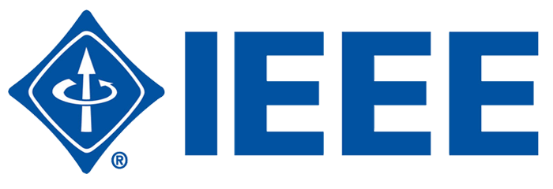
Jan. 12, 2024
Our three papers "Driver Digital Twin for Online Recognition of Distracted Driving Behaviors", "REDFormer: Radar Enlightens the Darkness of Camera Perception with Transformers", and "Federated learning for connected and automated vehicles: A survey of existing approaches and challenges" were published on IEEE Transactions on Intelligent Vehicles (IF=8.2).

Jan. 8, 2024
We attended the Transportation Research Board (TRB) 103rd Annual Meeting in Washington D.C. and presented three posters highlighting our work.
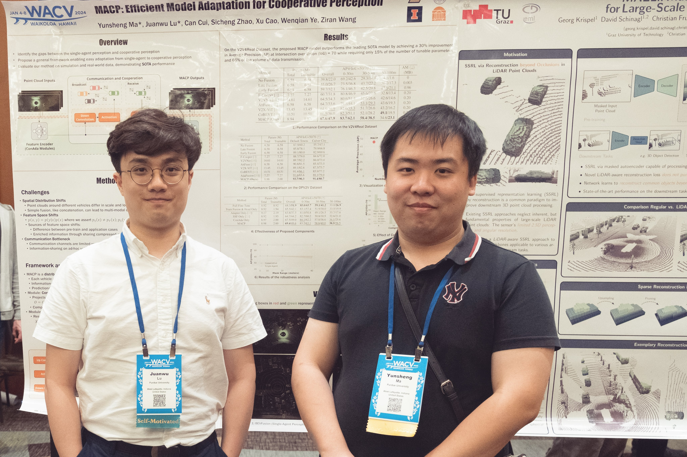
Jan. 8, 2024
We presented three papers and organized the 1st Workshop on Large Language and Vision Models for Autonomous Driving (LLVM-AD) at 2024 IEEE/CVF Winter Conference on Applications of Computer Vision (WACV) in Waikoloa, Hawaii.
Jan. 1, 2024
Our paper "Eco-approach at an isolated actuated signalized intersection: Aware of the passing time window" was published in the Journal of Cleaner Production (IF = 11.1).
Dec. 11, 2023
Our chapter "Cloud and Edge Computing for Connected and Automated Vehicles" was published in the Foundations and Trends® in Electronic Design Automation.
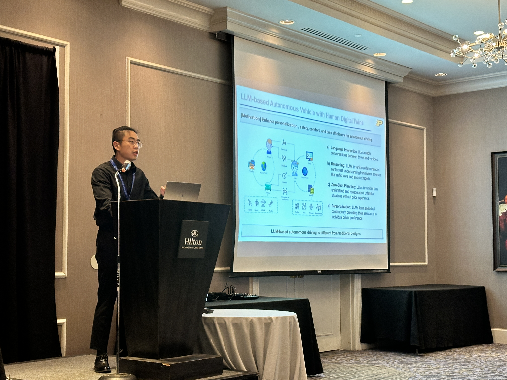
Dec. 9, 2023
We presented a paper and organized the 1st Workshop on Digital Twins at the 2023 ACM/IEEE Symposium on Edge Computing in Wilmington, Delaware.
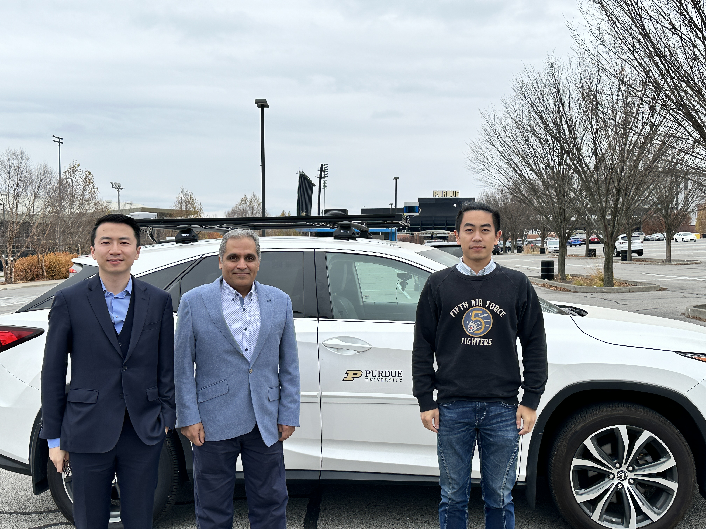
Nov. 17, 2023
We hosted Dr. Ali Borhan from Cummins for a campus visit at Purdue University.

Nov. 10, 2023
We hosted Dr. Masayoshi Tomizuka from the University of California, Berkeley for a campus visit at Purdue University.
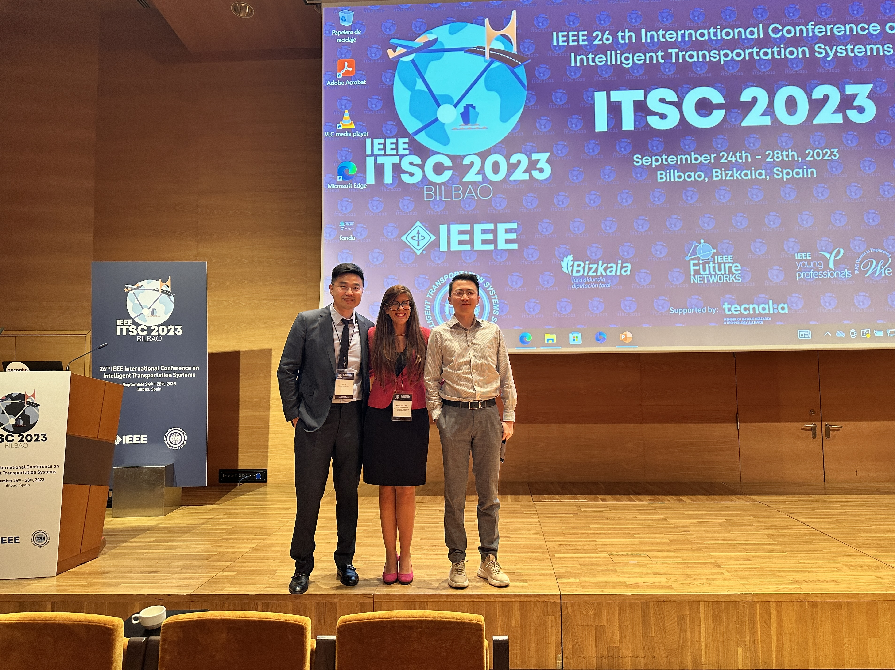
Sep. 28, 2023
We hosted the second special session on "Cooperative Driving in Mixed Traffic" at the IEEE 26th International Conference on Intelligent Transportation Systems (ITSC), Bilbao, Spain.
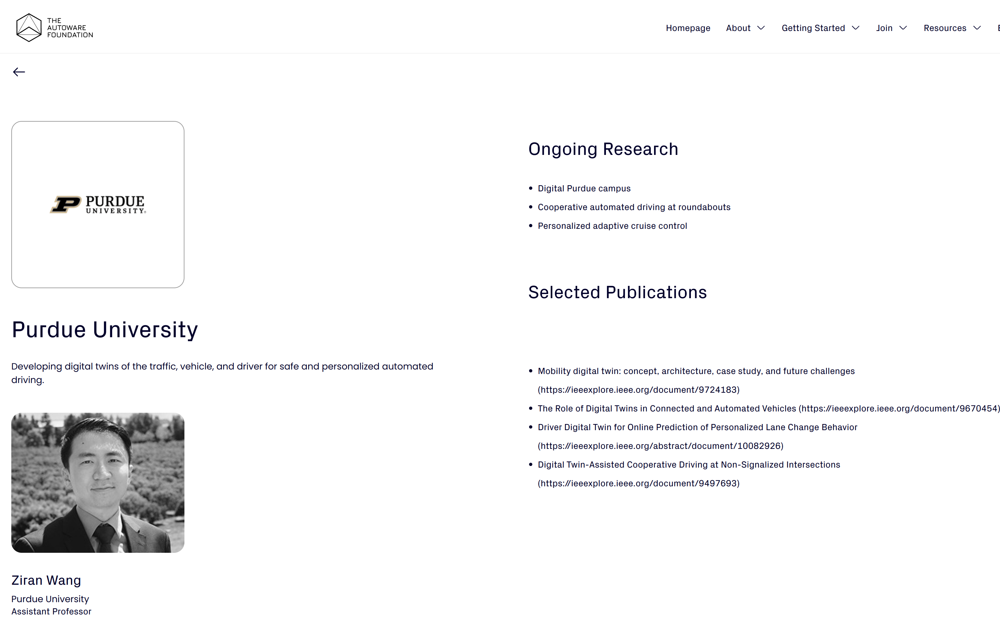
Sep. 17, 2023
Our lab was selected as one of the Autoware Foundation Centers of Excellence. More information can be found here.

Sep. 17, 2023
Our lab was featured in the Fall 2023 issue of Purdue University Lyles School of Civil Engineering Impact Magazine. You can read the article here.

Aug. 11, 2023
We hosted Anthony Gregory, Vice President of Cruise, at Purdue University, where meaningful discussions were held.
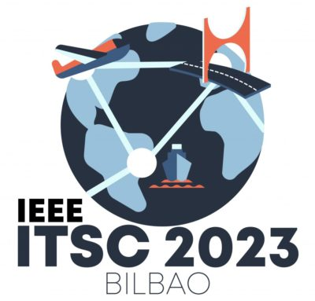
Jul. 13, 2023
Our three papers "Radar Enlighten the Dark: Enhancing Low-Visibility Perception for Automated Vehicles with Camera-Radar Fusion", "CEMFormer: Learning to Predict Driver Intentions from In-Cabin and External Cameras via Spatial-Temporal Transformers", and "A Survey of Federated Learning for Connected and Automated Vehicles" were accepted to IEEE 26th International Conference on Intelligent Transportation Systems (ITSC), Bilbao, Spain.
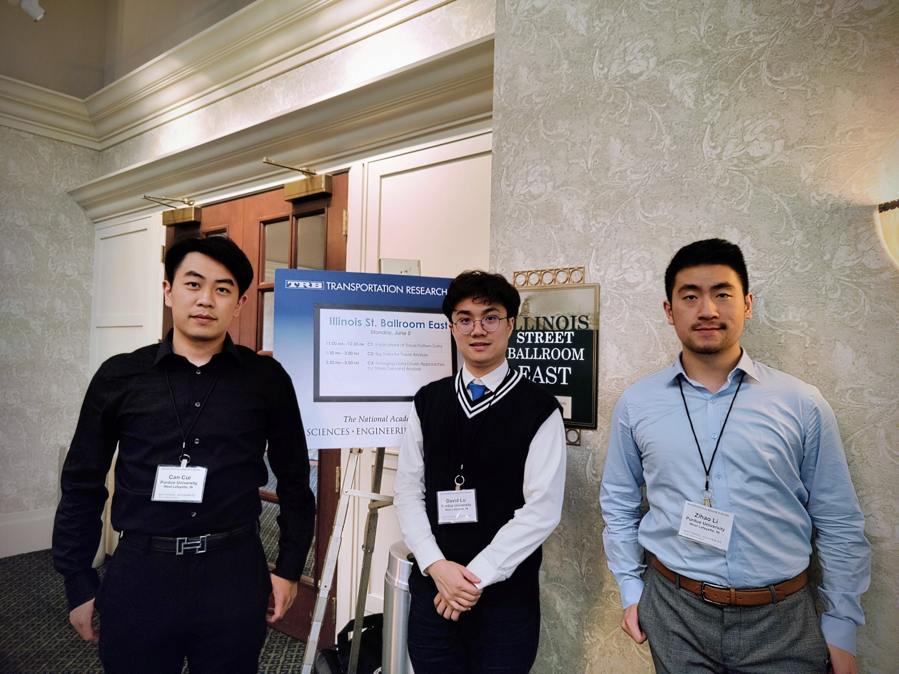
Jun. 4-6, 2023
We serve as organization committee members for the Transportation Research Board Conference on Innovations in Travel Analysis and Planning in Indianapolis, IN.

May 18, 2023
Our Ph.D. student Yunsheng Ma delivered a presentation at the 3rd Annual Conference on Next-Generation Transport Systems (NGTS-3) and received the Outstanding Speaker Award!
Apr. 13, 2023
Our two papers "Multi-View Multi-Scale Driver Action Recognition with Vision Transformer" and "Peer-to-Peer Federated Continual Learning for Naturalistic Driving Action Recognition" were accepted to 2023 IEEE / CVF Computer Vision and Pattern Recognition Conference (CVPR) Workshops in Vancouver, Canada.
Featured Videos
a Large Language Model (LLM)-based framework Talk-to-Drive(Talk2Drive)
A demo shows the advanced features of our Talk2Drive framework.
Digital Twins for Connected and Automated Vehicles
Prof. Wang was invited for a talk and panel discussion at the Digital Twins Symposium organized by Purdue Rosen Center for Advanced Computing (RCAC).
Mobility Digital Twin for Connected and Automated Vehicles
A talk at Purdue in Oct. 2022 that summarizes our work during the past five years.